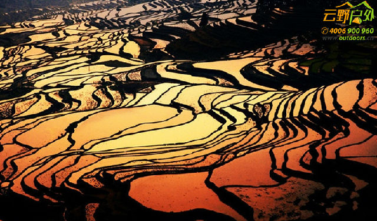

【活动时间】
第01期：2016年1月26日（集合日）——2月02日（解散日）
第02期：2016年1月30日（集合日）——2月06日（解散日）
第03期：2016年2月03日（集合日）——2月10日（解散日）
————春节前三期价格为2980元/人————儿童价：1580元/人（不占床位不含门票）————
第04期：2016年2月06日（集合日）——2月13日（解散日）
第05期：2016年2月07日（集合日）——2月14日（解散日）（除夕佳节）
第06期：2016年2月08日（集合日）——2月15日（解散日）（大年初一）
第07期：2016年2月09日（集合日）——2月16日（解散日）（大年初二）
第08期：2016年2月10日（集合日）——2月17日（解散日）（大年初三）
第09期：2016年2月11日（集合日）——2月18日（解散日）（大年初四）
第10期：2016年2月12日（集合日）——2月19日（解散日）（大年初五）
第11期：2016年2月13日（集合日）——2月20日（解散日）（大年初六）
第12期：2016年2月14日（集合日）——2月21日（解散日）（大年初七）
第13期：2016年2月15日（集合日）——2月22日（解散日）（大年初八）
————春节旺季价格为3180元/人————儿童价：1680元/人（不占床位不含门票）————
第14期：2016年2月16日（集合日）——2月23日（解散日）
第15期：2016年2月18日（集合日）——2月25日（解散日）
第16期：2016年2月21日（集合日）——2月28日（解散日）
第17期：2016年2月23日（集合日）——3月01日（解散日）
第18期：2016年2月26日（集合日）——3月04日（解散日）
第19期：2016年2月28日（集合日）——3月06日（解散日）
第20期：2016年3月01日（集合日）——3月08日（解散日）
第21期：2016年3月04日（集合日）——3月11日（解散日）
第22期：2015年3月06日（集合日）——3月13日（解散日）
第23期：2015年3月08日（集合日）——3月15日（解散日）
————最美春季价格为2980元/人————儿童价：1580元/人（不占床位不含门票）————
◆◆线路特色
1、爸爸去哪儿--普者黑：普者黑喀斯特地貌、万亩荷花，具备了秀、奇、古、纯、幽的特点，是休闲游和摄影爱好者的天堂。
2、世外桃源--坝美：坝美四周群山环抱，别有洞天的幽静秀美，八座山峰一字排开如一副水墨画卷。
3、红河哈尼梯田--元阳梯田：联合国教科文组织世界遗产名录，几万亩的梯田，在茫茫森林的掩映中，在漫漫云海的覆盖下，构成了神奇壮丽的景观。
4、历史文化名城--建水古城：建水古城历经12个世纪的建设，至今保存有50多座古建筑，被誉为“古建筑博物馆”和“民居博物馆”。规模宏大的清代民居建筑，有“西南边陲大观园”之称的朱家花园。
5、滇越铁路重镇--碧色寨：斑驳的法式建筑、古旧铁轨的历史沉淀。
6、全程无任何隐性购物和自费项目。领队会带大家去深度体验当地最美的景色和自然风光。
7、该线路是云南经典深度游线路之一，多年的组织操作经验，让你的深度游之旅无限精彩。
◆◆活动亮点
1、深入挖掘滇东北的元阳、坝美、普者黑以及罗平的最美的地方，去到一般旅行社不去到的一些景点，比如元阳：我们穿插了2段体验式徒步，可以拍到大量绝色梯田和云海，绝对是爽歪歪的线路，感受人行画中的感和真实感。
2、去到蒙自滇越铁路【碧色寨】，感受厚重的历史痕迹；去到普者黑桃园，感受春天的气息。
3、独家诚心实意的优化走法，全程不走回头路，安全舒适的住宿环境，多年的线路组织经验让大家玩的更加尽兴和开心。
【咨询电话】：136 6050 9716
【活动时间】：日期详见下方活动时间
【活动天数】：8日7夜
【活动地点】：罗平、元阳梯田、坝美、普者黑
【集合地点】：第一天为全天集合时间，多晚都没关系！
【线路级别】：休闲
※图片欣赏


.jpg")
.jpg")
.jpg")
.jpg")


【行程安排】
第一天/Day 1： 全国各地——昆明集合
各地队员全天昆明酒店报道（集合指定地点提前二天通知）。如果抵达时间早的，可以自行到海埂大坝附近逛逛，那边有云南民族村景区和西山国家风景区，从民族村都可以坐索道上去到西山风景区，到风景区龙门可以远眺整个滇池和大片昆明地区，风光很美。当然也可以去翠湖公园去看看，这段时间红嘴鸥都回来了，无数红嘴鸥展翅飞翔，构成一幅幅美景；还可以去那边逛逛陆军讲武堂；当然也可以去南屏步行街去品尝当地最特色的汽锅鸡或过桥米线，金汁路的野山菌佛跳墙等特色美食；或者去民族博物馆，昆明世博园都是不错的选择。回酒店前记得顺便在超市采买些巧克力，牛肉干，酸奶等路上的零食。晚上酒店大厅见面交尾款、发放礼品，酒店可全天办理入住手续。
住宿：昆明酒店标间
温馨提示：每期活动第一天全天集合，多晚都没关系，活动出发前1—2天我们会短信通知您，告之酒店的名字、地址、电话、到达酒店的交通方式、活动集合地点、车牌号和领队的联系电话。请注意查收！（以通知为准）
第二天/Day 2：昆明——建水古城——朱家花园——元阳坝达梯田
早餐过后昆明出发.约3小时车程抵达建水古城，游览【朱家花园】【建水古城】【朝阳楼外景】建水用午餐，后途径个旧、元阳新县城南沙，抵达元阳梯田景区，前往【坝达梯田】拍摄日落。19:00左右结束拍摄，乘车前往胜村入住以及用晚餐。
【朱家花园】：建水朱家花园，占地两万多平方米，各种庭院楼阁应有尽有，布局井然有序，院落层出叠进。
【建水古城】：建水古城是国家历史文化名城，位于云南南部红河州建水县临安镇。建水古城历经12个世纪的建设，至今保存有50多座古建筑，被誉为“古建筑博物馆”和“民居博物馆”。
【朝阳楼外景】：朝阳楼为古临安府城东城楼，以“东迎朝晖”而得名，是云南省保存较好、建筑宏伟的古城城楼。建于明洪武二十二年(1389年)。高24.45米，占地414平方米。
【坝达梯田】： 坝达景点是申报世界文化遗产核心保护之一、坝达梯田气势磅礴、面积广阔、立体感强、从海拔800米的麻栗村河起、依山而上、3700多级梯田棉不断、廷伸至海拔2000多米的高山。
食：早餐
宿：元阳景区标间
第三天/Day 3：元阳一日游（多依树梯田日出——爱春梯田—-—阿者科梯田穿越——老虎嘴日落）
早上5点半起床集合。前往日出最佳地——【多依树梯田】拍摄日出，朝阳透过云层射出光芒，穿过薄薄晨雾架起彩色的桥梁，多依树拍摄结束后。9点左右赶往【爱春】拍摄梯田，后到【阿者科村梯田】继续深入拍摄梯田美景，这个村庄的梯田我们是徒步进出，充满了神秘美感，是观看云海的好地方，一般游客都少有去到，大概要徒步5-8公里。中餐后回客栈稍作休整。下午前往【老虎嘴梯田】拍摄日落，途中拍摄【麻栗寨茶厂梯田】【全福庄梯田】，老虎嘴景区有上下2个观景台，位置一高一地，大家需要选择好机位，老虎嘴梯田落日散发出暖暖余辉与田埂线条交织流动。约19：00左右结束拍摄，后乘车前往胜村入住以及用晚餐。
【多依树梯田】：多依树的日出是最美的，就算是不能看到日出，它的清晨，也是美到极至的一幅动态风景画。而烟雨迷雾下若隐若现的多依树村庄，则是现实中的梦幻仙境。
【老虎嘴梯田】：6000多亩梯田分布于深谷，在老虎嘴你可以看到梯田中有2匹马，配上蓝天白云五彩斑斓，老虎嘴被美国摄影家称为世界上最壮丽的田园风光。老虎嘴是元阳带给世人的另一个奇迹。
【阿者科梯田】阿者科村,是个哈尼族的小村子,坐落在哀牢山的半山腰,森林——梯田——江河——村庄,四度同构,充满了浓郁的原始乡土气息,
食：早餐
宿：元阳景区标间
第四天/Day 4：元阳箐口梯田穿越——看日出云海—蒙自碧色寨——广南县城
早上6点集合用早餐，早餐后前往箐口梯田拍摄日出，日出拍摄结束后，穿越进村游览【箐口哈尼民族村寨梯田】，可拍摄：蘑菇房、石磨、水车、芭蕉、山间小道、梯田、哈尼半山村落等素材(时有穿有少数民族服装孩子，可提前准备好零钱或糖果，以便拍摄孩子时备用)09:30集合出发，约3小时抵达蒙自百年历史记忆库，素有 “小巴黎”之称的【滇越铁路-碧色寨】。斑驳的法式建筑和古旧的铁轨，镌刻着它曾经不可磨灭的光辉岁月，现在是摄影师和画家最喜欢去的取景地点。后乘车抵达广南县城安排入住。
食：早餐
宿：广南县城酒店标间
第五天/Day 5：坝美半日游——普者黑景区
08:00出发前往【世外桃源坝美】约1.5小时抵达景区，乘小船穿过约1公里的水洞，映入眼帘的是别有洞天的幽静秀美，四周群山环抱，八座山峰一字排开如一副水墨画卷！
游览完男女河、猴爬岩等景点后，吃过农家饭，约 1３点左右坐船出来。开始前往普者黑景区，约下午６点到达普者黑村，入住普者黑村或者仙人洞村景区酒店或者客栈标间。
食：早餐
宿：普者黑景区标间
第六天/Day 6：普者黑—早起看日出—重走爸爸去哪儿拍摄地—划船戏水——观万亩桃园——仙人洞村观日落
早起到普者黑村口的青龙山，登山看朝日晨雾中普者黑那飘渺空灵的全景。或者睡到自然醒，大家一起游览素有“小桂林”之称的普者黑，这里是《爸爸去哪儿》的外景拍摄地，这里有仙人湖、火把洞、观音洞、彝族文化生态村、情人湖、十里荷花湖......荡舟水上，打水仗，品烧烤、听故事。在这里可以尽情拍摄各种荷叶、湖水、孤峰群，感受湖光山色连为一体。
一一游览完毕后，领队带大家去观赏普者黑村路边的万亩桃园，每年的2-3月份期间，这里缤纷的红色把这画卷的山水美景渲染成一片一片火红的红色，十分漂亮！（注：如果碰上极个别排期桃花因为天气或时间还未开的情况则改为大家自由活动，去田野采风。）
晚上如果天气理想，领队会带大家去仙人洞村看看日落和晚霞。
食：早餐
宿：普者黑景区标间
第七天/Day 7：普者黑——罗平九龙瀑布——金鸡岭日落
8点出发前往罗平县【九龙瀑布】，中午路上路餐，约5个小时到达罗平县城后直接前往观赏中国六大最美瀑布之一的九龙瀑布群。在约两公里长的河道上有十级瀑布，九龙十瀑之间，以浅滩或深潭相连，形成了一串辉映太阳光芒的明珠彩带。边登高看景边拍照，渴了买根当地出名的水萝卜，汁多美味，清甜润喉，一路到九龙瀑顶端，那里的油菜花也非常好！
下午晚点前往罗平【金鸡峰从】，此处地方比较灵活，大家可以分开游玩摄影，金鸡峰可以在山头上拍摄，山不高，天气好可以拍摄到耶稣光射到云雾中若隐若现的油菜花以及金鸡峰群中。
食：早餐
宿：罗平县城标间
第八天/Day 8：罗平螺丝田——昆明市内解散
8点30分集合前往观赏【螺丝田油菜花】，这里的油菜花田呈现出螺丝状的梯田，与元阳的梯田形成鲜明的对比，让你不得不感叹劳动人民才是真正的艺术家，注意此处拍摄是在公路边，注意安全。
10点30分左右启程返回昆明，路上有好的景致也会作短暂停留拍照。约下午16点30分到达昆明集合酒店，结束愉快的7天深度游行程。相约下次再一起到云南来旅行，回去记得整理图片发游记到我们的网站或微信到朋友圈哦。
备注：
◆每期铁定出团，哪怕一人也是同样的服务，同样的质量，请放心报名放心订票！
◆活动返回当天尽量订晚点机票，最好是20：00以后，也可以定在第二天，路上遇到堵车等不确定因素很多，如果因此在路上耽误你的航班，我们不负任何责任的。
◆此次行程总共跨越8天时间，以上行程如遇特殊情况，在不减少景点的情况下领队有权在活动中根据实际情况作出调整。
◆如有小团队满6人报名，可根据客户需要制定活动计划，详情请来电咨询。
◆以上图片部分来自于网络，仅用于展示当地实景。感谢！
【活动费用】
1-3期（平常）：2880元/人；儿童1580元/人（儿童不占床位不含门票）
4-13期（春节）：3180元/人；儿童1680元/人（儿童不占床位不含门票）
14-23期（平常）：2980元/人；儿童1580元/人（儿童不占床位不含门票）
◆◆优惠方式
1、提前10天报名，交定金优惠80元/人
2、4人以上（含4人）同时报名，交定金优惠80元/人
※报名活动需预交定金1000元
※以上优惠不能同时享用！
◆◆费用包含
1、行程包车费用：全程正规旅游车包车费用，根据人数多少订车型， 路桥油费，司机吃住费用。
2、行程门票：元阳景区门票（元阳现实行单点单独检票制，我们购买为单次门票，不能重复进入景区，如果希望多次进入需另自费购门票）；九龙瀑景区门票；建水朱家花园门票；金鸡岭门票；坝美景区（门票费、马车费、船费）；普者黑景区（门票费、划船费）。
3、行程中住宿：7晚标准间（摄影景区内住宿均为摄影农家客栈标准间，不带星级。） 昆明市挂三星酒店一晚、元阳景区标间二晚、广南县城酒店标间一晚、普者黑景区标间二晚、罗平县酒店一晚。
4、全程7个早餐，其余中晚餐自理，大家AA一起吃（领队会推荐）。
5、每期7人以内含7人为司机兼领队，8人或以上派优质领队服务。
6、30万户外意外保险。
7、赠送：每人一条户外头巾、旅行三宝、每人每天一瓶水。
8、本线路6人或6人以上同时报名，免费接送机！
备注：请大家带上相关证件，如教师证、军官证、记者证、伤残证、老年证、导游证、学生证、摄影协会会员证等特殊证件，请在购票前向领队出示，根据当地政策减免相关费用，如有优惠，现场退还相应差价。
◆◆费用不含
1、九龙瀑布景区自由选乘的区间车或索道费
2、全程不含在内其余餐费(AA制，约450元)；
3、路程中自己消费（购买明信片、与景区内少数民族等人合影）；
4、沿途娱乐费用及发票费用；
5、单房差（行程住宿按照双人标准间安排，尽量安排拼房，如无法拼房则自补单人房间差价600元/人）
【报名流程】
方式一：短信报名（手机号：136 6050 9716）
方式二：QQ报名（QQ：177 968 3803）
1、发信息，内容包括：姓名、性别、身份证号码、参加人数和xx月xx日xx活动；
2、本活动需预交定金1000元，如需要退出，按下方服务约定办理；
3、通过在线或者线下进行支付活动费用并通知客服或邻队，收到订金后，发短信通知“报名成功”
4、活动出发前2天，我们会短信通知您注意事项、活动时间地点、车牌号、领队、电话等（以通知为准）；
5、活动当天，按通知要求到达集合地点和准备好相关的物品，带上好心情，快乐出发！
【付款方式】
通过下面指定帐号转帐
※预付定金：转帐帐号卡号一揽表
支付宝 136 6050 9716 黄芳
工商银行 6222 0836 0200 6138 363 黄芳 广州黄埔大道中支行
※亲，转款完成请务必保留凭证，并及时通知【黄小姐：136 6050 9716】
【服务约定】
1、预交活动费后报名成功，以交钱时间为准确定名额；
2、活动出发前10天取消全额退款；出发前6-9天取消，需扣除40%活动费用；活动前1-5天取消，需扣除60%活动费用；活动出发当日或活动当中无论任何原因退出不退任何费用！
3、取消报名，但找了朋友替补参加的，活动费全额退回；
4、所有出行需购买旅行意外保险（请提供正确的姓名及身份证号）；
5、领队有权根据实际情况对行程做调整，以保证活动顺利进行。
◆◆线路提示
1、 最佳拍摄时间在每年1、2月最好，不过这个时候正好是春节放假，人特别多，住宿很紧张，如果要去最好提前预订好来回的大交通机票或者火车票，提前预订目前折扣都较大。
2、此线路适合全家休闲游，也适合摄影爱好者深度游，因为本线路能全面体验到每个地方的美景以及当地特色的吃和玩等。
3、摄影爱好者最好是带上24-70广角的镜头，三角架和遮光罩等。
◆◆穿衣提示
1、云南昆明处在北回归线上，但海拔仍有1600多米，所以气候很好，不冷不热，但早晚较凉，中午的阳光很毒，注意防晒。衣物以轻便为主，T-恤，单裤一年四季都可以穿。还需要备一件外套。
2、云南海拔梯度较大：其中昆明海拔约1895米，大理约1976米，丽江约2410米，泸沽湖约2690米，香格里拉县约3280米，西双版纳约1700米，腾冲约1640米，梅里群峰最高海拔6740米，为云南最高点；河口县海拔仅76.4米，为云南省最低点；另省内旅游区域间距离较长，各地昼夜温差较大，敬请提前做好准备。自备晕车药、衣物、雨具、防晒霜等;有高血压、心脏病或其他病史情况的游客请主动告知，以便领队针对性安排或给出相关忠告，因客人隐瞒、虚报或其他个人因素引发的问题组织方概不负责！
【装备说明】
◆个人装备：65L背包防雨罩（或拖箱）、15L-25L小包（很重要，不能少）；紫外线强（必带防晒霜SPF30++以上、晒后修复霜、带沿遮阳帽、墨镜等）；气候干燥（带唇膏、护肤霜、保湿乳等护肤品）；保暖衣服（如羽绒服、冲锋衣、冲锋裤、抓绒衣、抓绒裤）、排汗内衣、快干衣裤两套、保暖手套、徒步鞋、保温水壶、手电或头灯、登山杖、雨衣、防水袋、常备药品、救生口哨、多功能刀！
◆个人物品：身份证、相机、各种数码产品充电器、电池、数码伴侣、厚垃圾袋、洗漱用品、纸巾、湿纸巾等。
◆个人食品：饮食条件有限，自备些巧克力、牛肉干、榨菜、果珍、咖啡、西洋参、干果（沿途可补餐）等高热量和情趣食品以备不时之需。
◆旅行常规物品：
1、保暖衣物（早晚温差都比较大）；雨具（雨伞或雨衣）；药包（感冒药、肠胃药等）；紫外线强，请一定携带防晒用品（防晒霜，帽子，墨镜等）。
2、其它物品按常规旅行准备即可。
3、相关电子数码产品，请带好充电器和备用电池。
4、身份证必须携带。
5、喜欢照相的朋友，请一定多带小饰品改变照型（小公仔、头巾、披肩、手环、花裙等）。
6、衣服颜色越鲜艳越上镜（红、黄、蓝、紫等）。
【提倡环保】
作为一名热爱自然的现代文明人，在亲近自然、回归自然的同时要爱护自然、保护环境，必须做到：
1、垃圾装袋：禁止随处乱扔垃圾，请带走自己的垃圾，走过不留痕。
2、生态环保：禁止破坏生态环境的违法行为，如砍伐树木、猎杀野生动物、污染水源等。
【注意事项】
1、白天天气炎热，请准备雨伞或帽子、防晒护肤之类的；早晚温差较大，请带好御寒衣物防水保暖衣裤；
2、本线路为常规徒步线路，休闲摄影为主，徒步强度不大；
3、注意安全，不做无保护的攀爬和个人英雄主义的冒险；
4、听从领队的安排，遵守团队纪律，集体行动，团结友爱，自助互助；
5、请大家自备一点基本药物，方便自已同时也方便大家。个人特殊药品必须自备，组织方只备常规基本药物；
6、必须有环保意识，不得乱扔垃圾；活动产生的垃圾一律带离，不采摘野外任何植物，不破坏植被。做到“不留下任何东西，除了脚印，不带走任何东西，除了照片和快乐！”；
7、严禁单独行动，必须三人同行原则，有事请告诉领队；不得擅自离开设定行进路线和活动范围；违反行程，后果自负；
8、春节各景点、餐厅游客较多，可能会出现拥挤、排队等候等现象，因此给您带来不便请多包容和理解；领队尽可能合理优化行程和错开高峰期。
【活动声明】
1、在不改变原定的接待标准及游览景点，领队有权在活动中根据实际情况作出调整；如因不可抗力因素（堵车、坏车、航空管制、塌方、地震、暴雨、台风等）造成团队行程更改、延误、滞留或提前结束时，领队可根据当时的情况全权处理，如发生费用加减，按未发生费用退还队员，组织方已支付的定金且无法退还的部分（如门票、用车、住宿等）需队员平摊。组织方遵从队员利益至上原则，会尽最大努力争取，为求把队员损失降到最少！
2、为了您的安全必须服从领队安排；本次户外活外有不可预见的危险（如跌倒、摔伤、中署、失温、迷路等）；报名者应对自己的身体和本次活动的路线及危险程度有清楚的认识和了解。参加户外活动，首先要做充分的准备；组织方代每个队员投保了旅游意外伤害险（请确认提供的姓名，身份证号码是正确的）；当事故发生时，组织方和领队将尽一切努力进行救护和援助；保险公司将按不同事故的理赔标准给予赔负；
3、团队纪律非常重要。必须守时、必须听从指挥、必须有团队精神；不单独行动、不得擅自离开设定行进路线和活动范围；违反行程，后果自负；
4、违反行程安排，造成人员及其他意外，个人负全部责任，组织方保留其追究法律责任的权利。